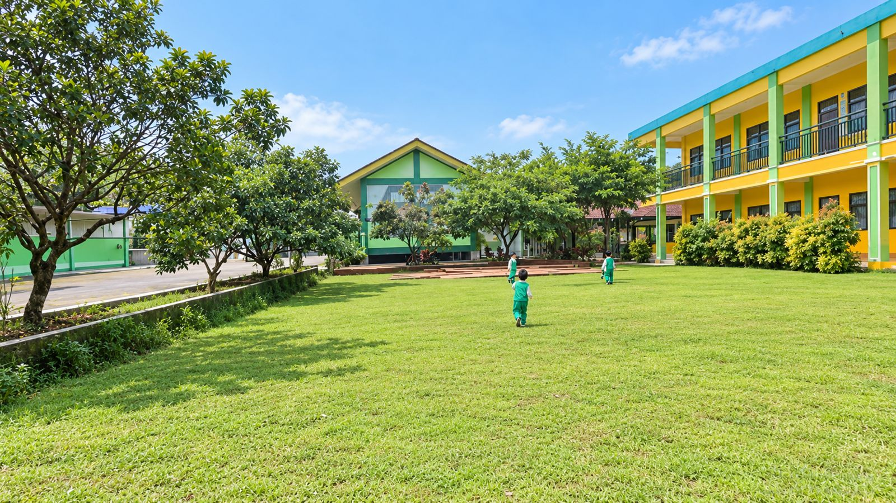
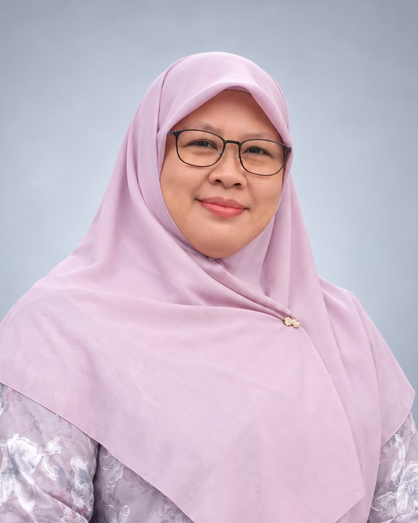
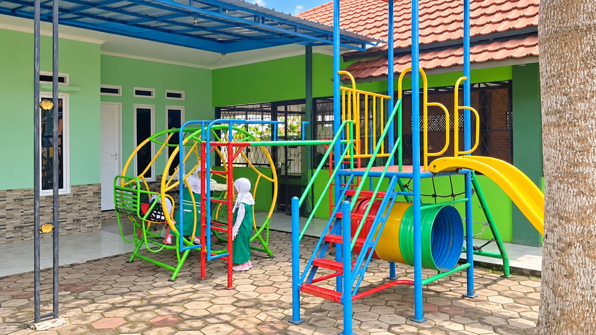
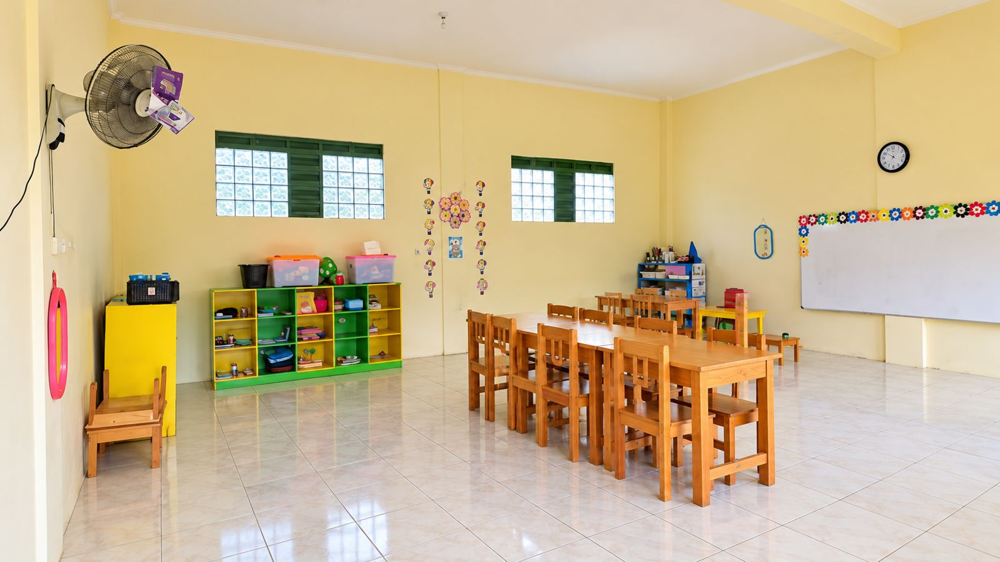
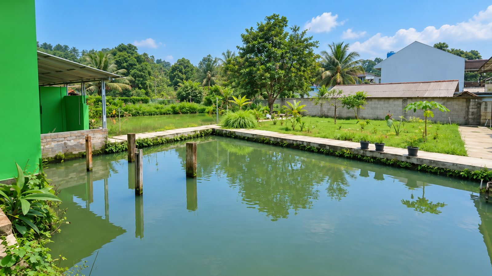

Foto estimasi ketika bangunan selesaiSPMB 2027/2028 · dibuka 14 November 2026
Assalamu'alaikum,
selamat datang di Ibnu Aqil 2
TK dan SDIT di Bukit Karomah, Dramaga, Bogor. Anak belajar ilmu, akhlak, dan kemandirian di tengah alam yang hijau dan sejuk.
Pendaftaran Senin-Jum'at, 08.00-13.00 WIB
Pendiri Ibnu Aqil 2

Kenapa Ibnu Aqil 2?
- Alam asri dan luasUdara sejuk, banyak ruang bermain
- Air melimpahKolam renang dan kolam ikan
- Belajar mandiriBerkebun dan merawat hewan
- Bimbingan mengajiHafalan surat dan doa harian
- Praktik ibadahWudhu, shalat, dan manasik
- Akhlak muliaLewat keteladanan guru
Enam langkah mudah mendaftar
Syarat lengkap- 1Cari informasiBaca brosur atau tanya admin lewat WhatsApp.
- 2Isi formulirFormulir pendaftaran diisi di sekolah.
- 3Serahkan berkasAkta kelahiran, KTP orang tua, KK, dan berkas lainnya.
- 4Tes dan wawancaraJadwalnya ditentukan oleh panitia SPMB.
- 5Selesaikan administrasiLengkapi administrasi sebelum batas waktu.
- 6Resmi diterimaSelamat bergabung di Ibnu Aqil 2!
Suasana Bukit Karomah
Semua foto Foto estimasi ketika bangunan selesai
Foto estimasi ketika bangunan selesai




Masih ada yang ingin ditanyakan?
Admin kami siap menjelaskan dengan sabar, termasuk soal biaya dan jadwal tes.